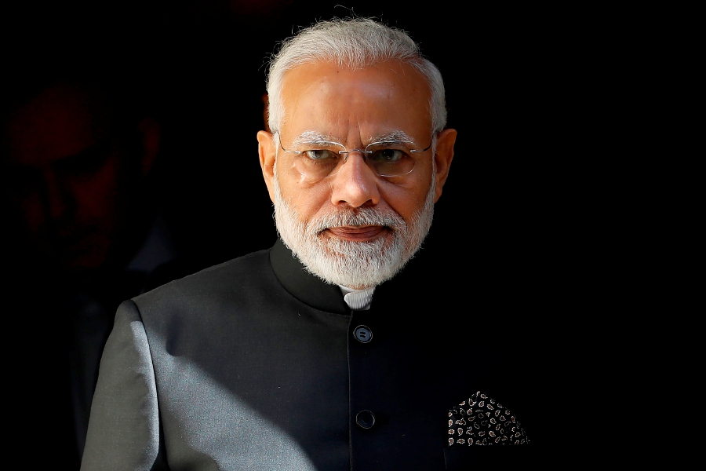

17 September 1950
"Hard work never bring fatigue. It's bring satisfaction"
Narendra Damodardas Modi born 17 September 1950 is an Indian politician who has served as the 14th prime minister of India since May 2014. Modi was the Chief Minister of Gujarat from 2001 to 2014 and is the Member of Parliament (MP) for Varanasi. He is a member of the Bharatiya Janata Party (BJP) and of the Rashtriya Swayamsevak Sangh (RSS), a right wing Hindu nationalist paramilitary volunteer organisation. He is the longest-serving prime minister from outside the Indian National Congress.